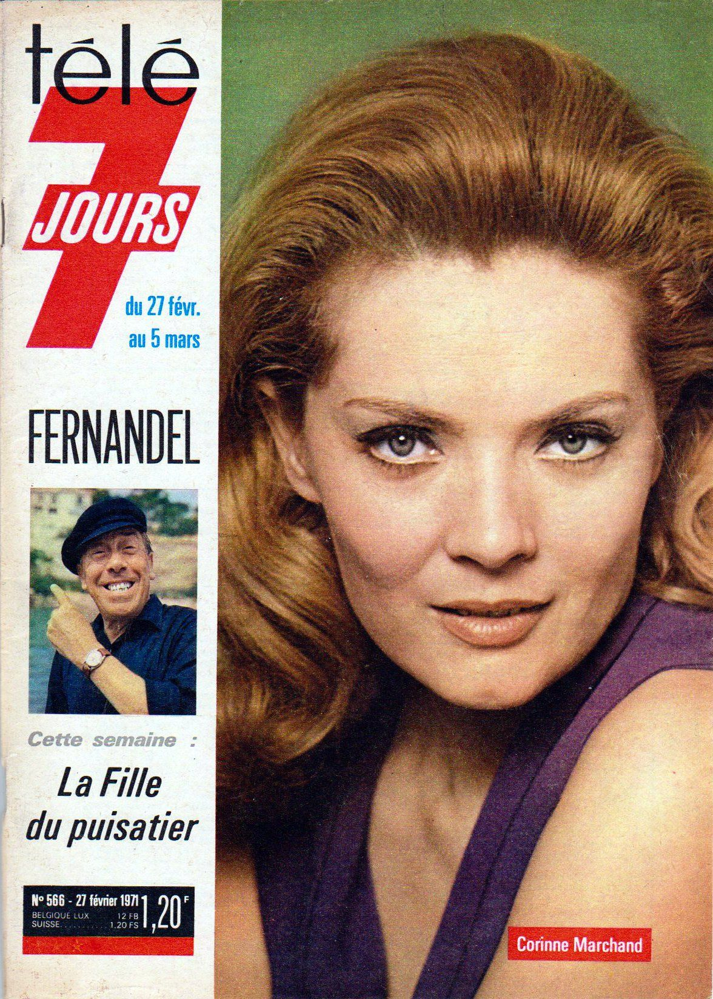

Corinne Marchand was born on 4 December 1937 in Paris, France.
She is an actress, known for Cléo de 5 à 7 (1962), Les évasions célèbres (1972)
and Nestor Burma, détective de choc (1982).

Cover of the Magazine TÉLÉ 7 JOURS [566]
Corinne Marchand attends the premiere of 'Cleo from 5 to 7'
held at Le Champollion in Paris, France, on March 18, 2014.
Photo by Alban Wyters/ABACAPRESS.COM
BACK TO HOME